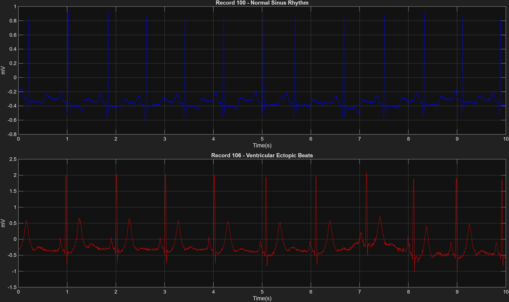

Telemedicine-grade noise removal using FIR & IIR digital filters.
MIT-BIH Arrhythmia Database — Records 100 & 106.
Three-stage cascade filter removes baseline wander, powerline interference, and EMG noise.
| Filter | Type | Order | Phase | Strength |
|---|---|---|---|---|
| FIR Hamming | Windowed-sinc | 100–500 taps | Linear phase | Good stopband |
| IIR Butterworth | All-pole | 4th order | Zero-phase (filtfilt) | Maximally flat |
| IIR Chebyshev II | Equiripple SB | 4th order | Zero-phase (filtfilt) | Sharp rolloff |
All 16 figures from the MATLAB analysis — navigate with tabs or arrow keys.

ecg_denoising.m (239 lines)
Loading...Deep-dive into the DSP concepts, code, and figure analysis.